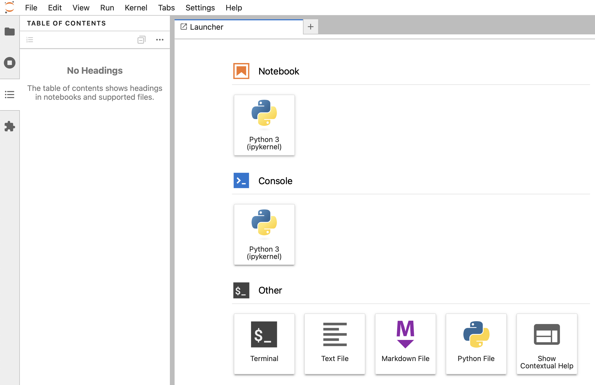

Setting Up Jupyter Lab On Mac
Configurer Python sur un Mac peut être délicat. Le nombre d'options est important, et elles peuvent interagir de manière étrange. De plus, vous devez vous rappeler quelle méthode d'installation vous avez utilisée une fois que vous souhaitez changer de version ou mettre à jour. Ce post devrait me rappeler comment je l'ai fait 😉
Installer Python
Il existe de nombreuses façons d'installer Python sur Mac et de gérer ses versions :
- Le Python installé sur MacOS
brew- Anaconda
pyenv- ...
Ce qui a le mieux fonctionné pour moi est pyenv :
- Installez-le :
brew install pyenv. Je suppose que vous avez Homebrew installé... - Consultez les options et commandes offertes :
pyenv - Listez toutes les versions de Python disponibles pour pyenv :
pyenv versions - Installez une version :
pyenv install 3.12(C'est la version de Python que j'utilise actuellement) - Définissez la version utilisée globalement :
pyenv global 3.12 - Vérifiez quelle version est définie globalement :
pyenv globaloupython --version
Créer un répertoire de travail
Créez le répertoire dans lequel vous souhaitez travailler dans le cadre de votre projet. Je garde tous mes projets de codage sous ~/git. De cette façon, je sais que tous les projets sous ~/git n'ont pas besoin d'être sauvegardés car ils sont dans un dépôt git.
Exemple :
cd ~/git
mkdir my_python_project
cd my_python_project
Créer un environnement local
Afin de fournir à mon projet son propre environnement Python, j'utilise les Environnements Virtuels de Python :
cd ~/git/my_python_project
python3.12 -m venv .venv
De cette manière, j'ai créé un environnement à l'intérieur du sous-répertoire .env. Pour l'activer, utilisez source .venv/bin/activate.
Remarque : Comme mon sous-répertoire .env ne doit pas être dans le dépôt git, il doit être listé dans le fichier .gitignore.
Installer Jupyter Lab
Maintenant que j'ai l'environnement Python, je peux installer Jupyter. Assurez-vous d'être dans le bon répertoire et que l'environnement Python est activé :
# Allez dans mon répertoire de projet et activez son environnement Python
cd ~/git/my_python_project
source .venv/bin/activate
# Installez Jupyter Lab dans cet environnement
pip install jupyterlab
# Très souvent, il me demande de mettre à jour pip lui-même
pip install --upgrade pip
# Démarrez Jupyter Lab
jupyter lab
# Attendez un peu et votre navigateur devrait s'ouvrir sur http://localhost:8888/lab
Créer un nouveau notebook
Votre navigateur devrait être ouvert dans un nouvel environnement Jupyter Lab :

Cliquez sur Notebook > Python 3 et votre premier Notebook devrait être prêt et fonctionnel :

Pour commencer avec Jupyter Lab, suivez leur Guide de l'utilisateur.